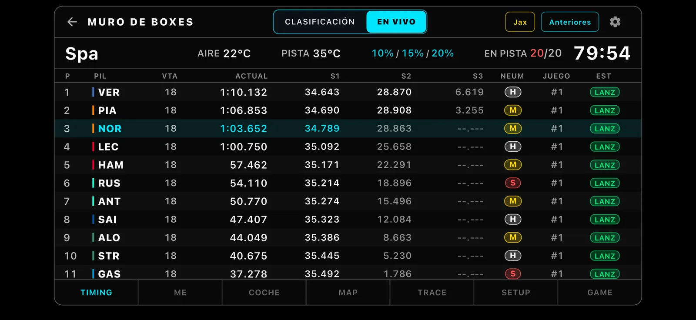

Gratis
- TIMING: toda la CLASIFICACIÓN, cada piloto
- GAME: los ajustes de juego de la sesión
- ME: tus vueltas y tus stints
- SETUP: tus reglajes de la sesión, por nombre
Cómo funciona
Tiempos, tus vueltas, el estado del coche, el mapa en vivo, las trazas, los reglajes y los ajustes del juego, pestaña por pestaña.
Desde el panel, toca la barra MURO DE BOXES en el borde derecho. El muro de boxes se desliza encima; toca la barra PANEL o la flecha atrás para volver.
Desde la pantalla de inicio, abre directamente Muro de boxes. Es útil en un segundo dispositivo, para un amigo que hace de ingeniero o si solo quieres los tiempos. Usa la flecha atrás para salir.
La cabecera muestra siempre el circuito, las temperaturas del aire y de la pista, la previsión de lluvia, el número de coches en pista y el reloj de sesión.



MAP y TRACE tienen un botón de ampliar en su esquina superior derecha. Tócalo para ver una vista en vivo a pantalla completa y luego el botón de cerrar para volver a la pestaña en la que estabas.
Si el juego pasa a una nueva sesión mientras estás en el muro de boxes, JMD te avisa de que la sesión anterior terminó y se guardó, y empieza a seguir la nueva. Toca OK.
Una pestaña bloqueada indica la función y lo que añade Jax Pro, y abre la pantalla de suscripción al tocarla. Las demos integradas muestran todas las pestañas completas.